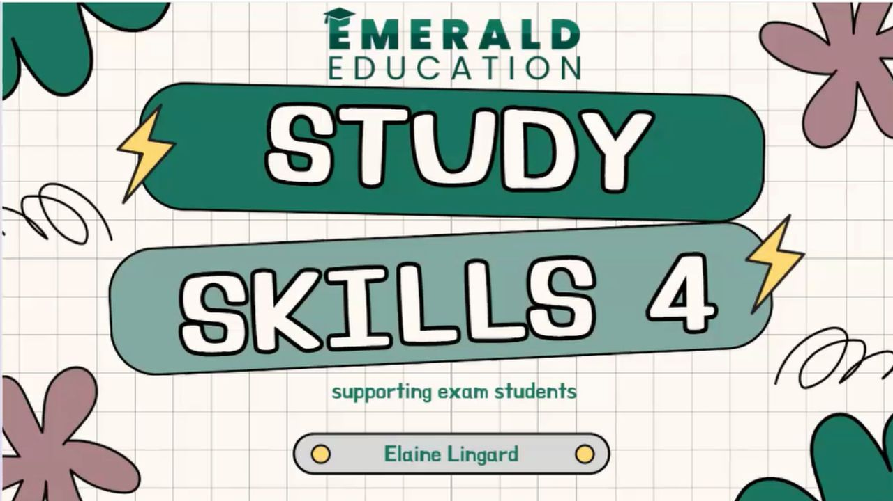

Study Skills course (online)
Are you (or your child) spending hours revising but not seeing the results you hoped for? Feeling overwhelmed, stuck, or just unsure how to start? This four-session course is designed to change that. Why This Course Works This isn’t just a list of study tips. This is a practical, proven system tailored to students facing the pressures of school exams, whether they are facing the JC or LC exams. Across four engaging sessions, we’ll walk through how to: Organise time effectively without stress Study smarter, not longer Remember key facts with strategies that actually work Tackle exams with calm and clarity Build the kind of confidence that leads to better results What You’ll Learn Each session focuses on simple, effective techniques that can be used immediately. You’ll discover: How to understand the way your brain learns best How to create revision plans you’ll actually stick to Powerful ways to take notes, recall information, and prepare for exams Techniques to manage stress, boost motivation, and avoid burnout You’ll also receive downloadable worksheets, templates, and personalised tools to help make your study time more effective and less frustrating. Enroll today to make a difference: https://3057.freshlearn.com/31331
View on Google Maps →